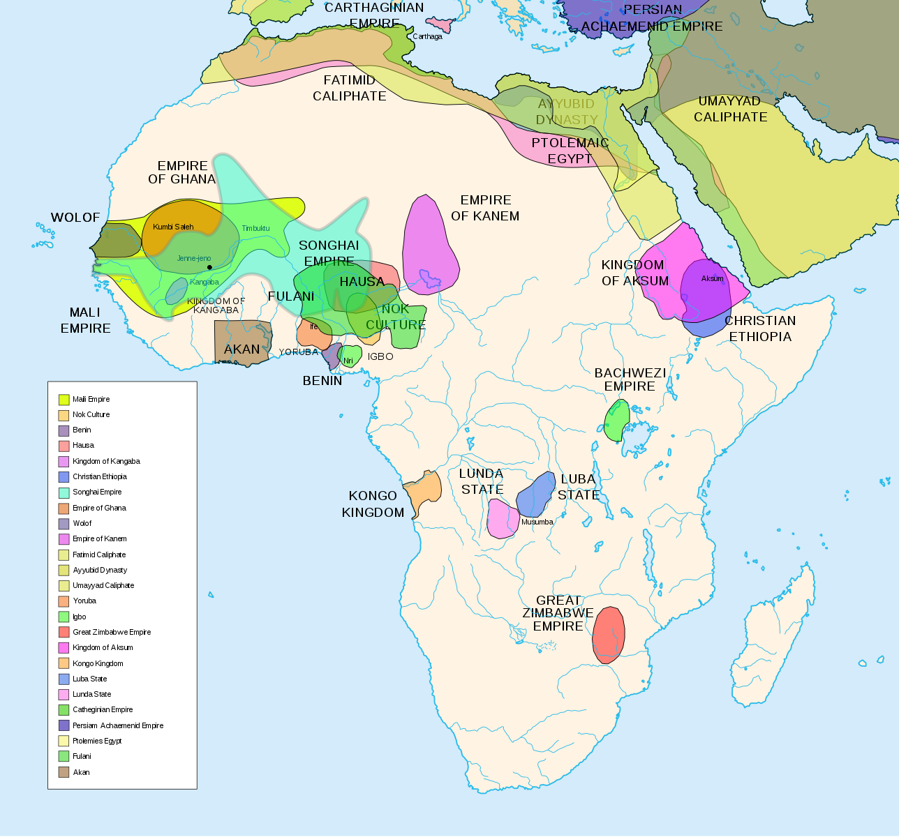

The Voyage and Acts of Dom Francisco, Viceroy of India, written in the ship Sam Rafael of Oporto, captained by Feman Suarez.
In the year 1505, on 25 March, Tuesday, the feast of the Annunciation of Our Lady, Dom Francisco d'Almeida sailed with a fleet of twenty vessels. There were fourteen large men-of-war and six caravels.
They rounded the Cape of Good Hope on 20 June and were driven away from it seventy leagues. On 2 July there were great storms with thunder, and two men from the flagship and one from the Lyomarda fell overboard. On 18 July they sighted land for the first time, 369 leagues beyond the Cape of Good Hope, near the Ylhas Darradeiras, which are thirty leagues from the island of Mozambique. On 19 July they were in sight of Mozambique, and on 21 July they were crossing the shallow waters of Sam Rafael, which are thirty leagues from Kilwa.
On Tuesday, 22 July, they entered the harbour of Kilwa at noon, with a total of eight ships. Immediately on their arrival the Grand-Captain, Dom Francisco d'Almeida, sent Bona Ajuta Veneziano to summon the king. He excused himself from coming, but sent the Grand-Captain gifts instead; They were five goats, a small cow and a large number of coconuts and other fruit.
Next flay the Grand-Captain ordered the ships to have their artillery in readiness. Then the captains, each in his best clothes, and full armour, went in his own boat to lie off the town in the hope that the king would decide to come out. The sheikh, however, sent a message to say that he could not come since he had guests, but, if required, he would send the tribute due to the King of Portugal. This message was brought by a party of five Moors, who were immediately seized.